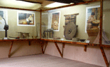
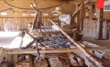
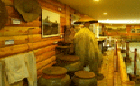
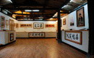
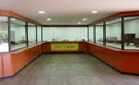
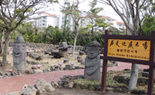
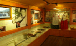

주메뉴


- 관람안내
- 전시관시설
전시관시설
제주민속촌 각 전시실에 대한 자세한 정보를 볼 수 있습니다.

- 관모공예전시장
-
- 망건, 탕건, 갓모자, 갓양태를 겯는 일을 갓일 또는 관모공예라 합니다.
- 이곳에는 제주 여성들이 중요한 소득원이었던 관모공예 관련 도구들이 전시되었습니다.
- 전시물 : 탕건, 탕건골, 양태판이, 텅에구덕, 모자골, 모자골걸이, 공예 제작 사진

- 어구전시관
-
- 제주의 전통뗏목배인 테우와 어구, 해녀들이 사용했던 작업도구, 해녀복 등 바다에서 사용했던 각종 어업관련 도구들을 전시하고 있습니다.
- 전시물 : 테우, 아시와 공젱이, 듬북낫, 소살, 성게골각지, 정게호미, 물소중이 등

- 농기구전시관
-
- 파종에서부터 수확할 때까지 사용하는 농기구들을 종류별로 구분하여 전시해 놓았습니다.
- 제주도의 땅은 대부분 화산회토로 되어 있으며, 돌이 많아서 농기구들도 다른 지방과 많은 차이가 있습니다.
- 전시물 : 따비, 쟁기, 곰배, 남테, 돌테, 골갱이, 질메, 보리클, 산듸클, 얼맹이, 멍석, 우장 등

- 추사전시관
-
- 제주에서 유배생활을 통해 제주와 깊은 인연을 맺었던 추사 김정희 선생의 작품 영인본(影印本) 50여 점이 전시되었습니다.

- 특별전시실
-
- 특별전시실에는 민속촌의 성격에 맞게 분기별 새로운 주제를 갖고 전시함으로써 관람객들에게 또다른 볼거리와 흥미를 제공하고 있습니다.
| 특별전 | 내용 |
|---|---|
| 1회 특별전 | 제주의 옛 사진전 (05. 3. 18 ~ 4. 12) |
| 2회 특별전 | 제주의 옛 살림살이전 (05. 4. 20 ~ 7. 25) |
| 3회 특별전 | 한국의 세계문화유산 사진전 (05. 7. 27 ~ 9. 30) |
| 4회 특별전 | 제주의 부엌 생활 도구전 (05. 10. 1 ~ 12. 31) |
| 5회 특별전 | 제주의 복식전 (06. 3. 20 ~ 5. 20) |
| 6회 특별전 | 제주의 옛 사진전 (06. 5. 25 ~ 7. 25) |
| 7회 특별전 | 사진으로 보는 제주민속유물 (06. 8. 1 ~ 9. 30) |
| 8회 특별전 | 민속놀이전 (06. 10. 5 ~ 07. 3. 15) |
| 9회 특별전 | 제주의 목가구전 (07. 4. 1 ~ 12. 25) |
| 10회 특별전 | 제주의 부엌 살림살이전 (08. 1. 10 ~ 8. 15) |
| 11회 특별전 | 기증자료 특별전 (08. 9. 3 ~ 09. 2. 25) |
| 12회 특별전 | 옛날 도구전 (09. 2. 25 ~ 10. 9. 4) |
| 13회 특별전 | 말총공예 특별전 (10. 9. 5 ~ 10. 2) |
| 14회 특별전 | 현태규 특별전 (10. 10. 2 ~ 4. 14) |
| 15회 특별전 | 술 다끄는 도구전 (11. 4. 15 ~ 12. 4. 29) |
| 16회 특별전 | 제주 띠 생활사전 (12. 4. 30 ~ 13. 3. 30) |
| 17회 특별전 | 흙으로 빚어낸 제주이야기 (13. 4. 1 ~ 13. 9. 30) |
| 18회 특별전 | 제주 해녀이야기 (13. 10. 14 ~ 14. 3. 30) |
| 19회 특별전 | 낙화혁필 이야기 (14. 4. 21 ~ 14. 10. 31) |
| 20회 특별전 | 새김질 이야기 (14. 11. 3 ~ 15. 3. 31) |

- 돌문화전시장
-
- 돌이 많았던 제주에서는 옛부터 돌을 가공한 생활용구들이 많았습니다.
- 이곳에서는 방에, 돗도고리, 절구, 고레, 화로, 동자석, 망주석 등 다양한 석물들이 전시되었습니다.
- 전시물 : 말방에, 돗도고리, 고레, 풀고레, 절구, 돌방에, 봉덕화로, 방사탑, 산담, 동자석, 가첨석, 농대석 등

- 대장금 미니테마파크
-
- 2003년 12월 11일부터 27일까지 17일 간 제주민속촌을 배경으로 드라마 '대장금'이 촬영되었는데, 당시의 촬영 장면과 대사, 출연진의 사인이 담긴 안내판과 포토존이 있습니다.
- 특히 대장금 미니테마파크에는 대장금 의상, 촬영 당시 대본, 약초, 관련 사진 및 의료기구가 전시되어 있습니다.